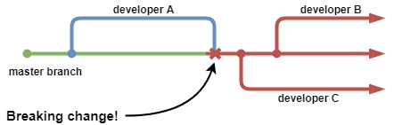
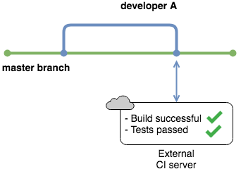
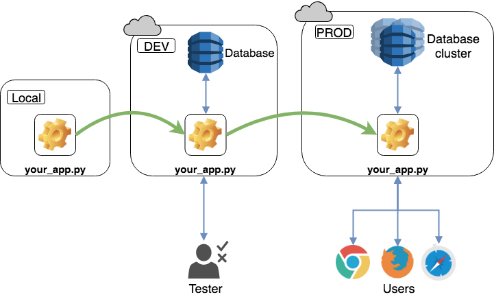

Integración Continua con Python
Al escribir código por su cuenta, la única prioridad es hacerlo funcionar. Sin embargo, trabajar en un equipo de desarrolladores de software profesionales conlleva una gran cantidad de desafíos. Uno de esos desafíos es coordinar a muchas personas que trabajan en el mismo código.
¿Cómo hacen los equipos profesionales docenas de cambios por día mientras se aseguran de que todos estén coordinados y que nada se rompa? ¡Bienvenidos a la integración continua!
¿Qué es la integración continua?
La integración continua (CI - Continuous Integration) es la práctica de generar y probar con frecuencia cada cambio realizado en el código automáticamente y lo antes posible. El desarrollador y autor prolífico Martin Fowler define CI de la siguiente manera:
“La integración continua es una práctica de desarrollo de software donde los miembros de un equipo integran su trabajo con frecuencia, generalmente cada persona se integra al menos diariamente, lo que lleva a múltiples integraciones por día. Cada integración se verifica mediante una compilación automatizada (incluida la prueba) para detectar errores de integración lo más rápido posible". ( Fuente )
La programación es iterativa. El código fuente vive en un repositorio compartido por todos los miembros del equipo. Si se desea trabajar en ese producto, se debe tener una copia. Se harán cambios, se probarán e integrarán nuevamente en el repositorio principal. "Enjuagar y repetir".
No hace mucho tiempo, estas integraciones eran grandes y estaban separadas por semanas (o meses), causando dolores de cabeza, perdiendo el tiempo y perdiendo dinero. Armados con experiencia, los desarrolladores comenzaron a hacer cambios menores para integrarlos con más frecuencia. Esto reduce las posibilidades de introducir conflictos que se deban resolver más adelante.
¿Por qué debería importarme?
La integración continua trata realmente de en qué pasan el tiempo los programadores.
Con CI, se pasará menos tiempo:
- Preocupados por introducir un error cada vez que se realizan cambios
- Arreglando el desastre que alguien más hizo para que poder integrar nuevo código
- Asegurando que el código funciona en cada máquina, sistema operativo y navegador
Por el contrario, se pasará más tiempo: - Resolviendo problemas interesantes - Escribiendo un código increíble en equipo - Co-creando productos increíbles que brinden valor a los usuarios
¿Como suena eso?
A nivel de equipo, permite una mejor cultura de ingeniería, donde se entrega valor temprano y con frecuencia. Se fomenta la colaboración y los errores se detectan mucho antes. La integración continua: - Hace al equipo desarrollar más rápido - Le damos la confianza de que están creando software estable con menos errores - Se asegura que el producto funciona en otras máquinas, no solo en su computadora portátil - Se eliminan muchos gastos generales tediosos y permite que se concentrarse en lo que importa - Se reduce el tiempo dedicado a resolver conflictos (cuando diferentes personas modifican el mismo código)
Conceptos básicos
Hay varias ideas y prácticas clave que se debe comprender para trabajar eficazmente con una integración continua. Además, puede haber algunas palabras y frases con las que no se esté familiarizado, pero que se usan con frecuencia cuando habla de CI. Este capítulo le presentará estos conceptos y la jerga que viene con ellos.
Repositorio de fuente única
Si se está colaborando con otros en una sola base de código, es típico tener un repositorio compartido de código fuente. Cada desarrollador que trabaja en el proyecto crea una copia local y realiza cambios. Una vez que se está satisfecho con los cambios, se fusionan nuevamente en el repositorio central.
Se ha convertido en un estándar usar sistemas de control de versiones (VCS) como Git para manejar este flujo de trabajo. Los equipos suelen utilizar un servicio externo para alojar su código fuente y manejar todas las partes móviles. Los más populares son GitHub, BitBucket y GitLab.
Git permite crear múltiples ramas de un repositorio. Cada rama es una copia independiente del código fuente y se puede modificar sin afectar a otras ramas. Esta es una característica esencial, y la mayoría de los equipos tienen una rama principal (a menudo llamada rama maestra) que representa el estado actual del proyecto.
Si se desea agregar o modificar código, debe crear una copia de la rama principal y trabajar en su nueva rama de desarrollo. Una vez que haya terminado, combine esos cambios nuevamente en la rama maestra.

El control de versiones contiene más que solo código. La documentación y los scripts de prueba generalmente se almacenan junto con el código fuente. Algunos programas buscan archivos externos utilizados para configurar sus parámetros y configuraciones iniciales. Otras aplicaciones necesitan un esquema de base de datos. Todos estos archivos deben ir al repositorio.
Si nunca ha usado Git o necesita un repaso, consultar Introducción a Git y GitHub para desarrolladores de Python .
Automatizando la construcción (Build)
Construir código (build) significa tomar el código fuente sin procesar, y todo lo necesario para su ejecución, y traducirlo a un formato que las computadoras puedan ejecutar directamente. Python es un lenguaje interpretado, por lo que su "compilación" gira principalmente en torno a la ejecución de pruebas en lugar de la compilación.
Ejecutar esos pasos manualmente después de cada pequeño cambio es tedioso y requiere tiempo y atención valiosos de la resolución de problemas reales que se está tratando de resolver. Una gran parte de la integración continua es automatizar ese proceso y quitarlo de la vista (y de la mente).
¿Qué significa eso para Python? Piensar en el código más complicado posible. Si se usó una biblioteca, paquete o marco que no viene con la biblioteca estándar (pensar en todo lo que se necesita para instalar con pip, conda ó pipenv), Python necesita saberlo, para que el programa sepa dónde buscar cuando encuentre comandos que no reconoce.
Se almacena una lista de esos paquetes en require.txt o en un Pipfile. Estas son las dependencias del código y son necesarias para una compilación exitosa.
A menudo se escucha la frase "se rompió la compilación". Cuando se rompe la compilación, significa que se introdujo un cambio que dejó inutilizable el producto final. Pasa en las mejores familias, incluso a los desarrolladores senior endurecidos por la batalla. Se desea evitar esto principalmente porque esto impedirá que el resto trabaje.
El objetivo de CI es que todos trabajen en una base estable conocida. Si clonan un repositorio que se rompre durante la compilación, trabajarán con una versión dañada del código y no podrán introducir o probar sus cambios. Cuando la compilación está rota, la principal prioridad es arreglarla para que todos puedan reanudar el trabajo.

Cuando la compilación es automática, se recomienda que se acometa con frecuencia, generalmente varias veces al día. Esto descubrir rápidamente los cambios y notar si hay un conflicto entre dos desarrolladores. Si hay numerosos cambios pequeños en lugar de algunas actualizaciones masivas, es mucho más fácil localizar dónde se originó el error. También se alenta a dividir el trabajo en trozos más pequeños, por lo que es más fácil de rastrear y probar.
Pruebas automatizadas
Dado que todos están realizando cambios varias veces al día, es importante saber que un cambio no rompió nada más en el código ni se introdujeron errores. En muchas empresas, las pruebas son ahora responsabilidad de cada desarrollador. Si se escribe código, se debe escribir pruebas. Como mínimo, se debe cubrir cada nueva función con una prueba unitaria.
Ejecutar pruebas automáticamente, con cada cambio comprometido, es una excelente manera de detectar errores. Una prueba fallida hace que la compilación falle automáticamente. Llamará la atención sobre los problemas revelados por las pruebas, y la compilación fallida hará corregir el error que se introdujo. Las pruebas no garantizan que el código esté libre de errores, pero protege contra muchos cambios descuidados.
Automatizar la ejecución de la prueba da tranquilidad porque así, el servidor probará el código cada vez que se comprometa, incluso si se olvidó hacerlo localmente.
Uso de un servicio externo de integración continua
Si algo funciona en un ordenador, ¿funcionará en todos? Probablemente no. Es una excusa cliché y una especie de broma interna entre los desarrolladores decir: "¡Bueno, funcionó en mi máquina!". Hacer que el código funcione localmente no es el fin de la responsabilidad.
Para abordar este problema, la mayoría de las empresas utilizan un servicio externo para manejar la integración; al igual que GitHub aloja el repositorio de código fuente. Los servicios externos tienen servidores donde crean código y ejecutan pruebas. Actúan como monitores para su repositorio y evitan que cualquier cosa se fusione con la rama maestra si los cambios rompen la compilación.

Existen muchos servicios de este tipo, con varias características y precios. La mayoría tiene un nivel gratuito (CircleCI) para que se pueda experimentar con uno de sus repositorios.
Pruebas en un entorno de ensayo
Un entorno de producción es donde finalmente se ejecutará el software. Incluso después de compilar y probar con éxito la aplicación, no se puede estar seguro de que el código funcionará en la computadora de destino. Es por eso que los equipos implementan el producto final en un entorno que imita el entorno de producción. Una vez que se esté seguro de que todo funciona, la aplicación se implementa en el entorno de producción.
Nota: Este paso es más relevante para el código de la aplicación que el código de la biblioteca. Las bibliotecas de Python que se escriban aún deben probarse en un servidor de compilación, para garantizar que funcionen en entornos diferentes de su computadora local.
Escuchará a las personas hablar sobre este clon del entorno de producción utilizando términos como entorno de desarrollo, entorno de ensayo o entorno de prueba. Es común usar abreviaturas como DEV para el entorno de desarrollo y PROD para el entorno de producción.
El entorno de desarrollo debe replicar las condiciones de producción lo más cerca posible. Esta configuración a menudo se llama paridad DEV/PROD. Hay que mantener el entorno en la computadora local lo más similar posible a los entornos DEV y PROD para minimizar las anomalías al implementar aplicaciones.

Se menciona esto para presentar el vocabulario, pero la implementación continua de software en DEV y PROD es un tema completamente diferente. El proceso se llama, como era de esperar, despliegue continuo (CD - Continuous Deploy). Puede encontrar más recursos al respecto en la sección
¡Manos a la obra!
La mejor manera de aprender es haciendo. Ahora que se comprenden todas las prácticas esenciales de la integración continua, es hora de ensuciarse las manos y crear toda la cadena de pasos necesarios para usar CI. Esta cadena a menudo se llama una tubería de CI.
Se supone que se conocen los conceptos básicos de Python y Git. Utilizaremos Github como servicio de alojamiento y CircleCI como servicio externo de integración continua. Si no se tiene cuenta con estos servicios, habrá que registrarse.
Definición del problema
El enfoque aquí es agregar una nueva herramienta a nuestro cinturón de servicios públicos, la integración continua. Para este ejemplo, el código Python en sí será sencillo. Se desea pasar la mayor parte del tiempo interiorizando los pasos de la construcción de una tubería, en lugar de escribir código complicado.
Imaginemos que el equipo está trabajando en una aplicación de calculadora simple. La tarea es escribir una biblioteca de funciones matemáticas básicas: suma, resta, multiplicación y división. No importa la aplicación real, porque eso es lo que los programadores desarrollarán, utilizando las funciones de la biblioteca.
Crear un repositorio
Iniciar sesión en la cuenta de GitHub, crear un nuevo repositorio CalculatorLibrary . Agregar un archivo README.md y .gitignore, luego clonar el repositorio en la máquina local. Si se necesita más ayuda con este proceso, echar un vistazo al tutorial de GitHub sobre cómo crear un nuevo repositorio.
Establecer un ambiente de trabajo
Para que otros (y el servidor de CI) puedan replicar las condiciones de trabajo, se debe configurar un entorno. Crear un entorno virtual en algún lugar fuera del repositorio y activarlo:
# Crear entorno virtual
$ mkdir CalculatorLibrary
$ cd CalculatorLibrary
$ pipenv shell
Esto creará un directorio que contiene una instalación de Python e indicará al intérprete que lo use. Ahora podemos instalar paquetes sabiendo que no influirá en la instalación predeterminada de Python del sistema.
Escribir un ejemplo simple de Python
Crear un nuevo archivo llamado calculator.py en el directorio de nivel superior del repositorio y copiar el siguiente código:
"""
Calculator library containing basic math operations.
"""
def add(first_term, second_term):
return first_term + second_term
def subtract(first_term, second_term):
return first_term - second_term
Este es un ejemplo básico que contiene dos de las cuatro funciones que escribiremos. Una vez que tengamos en funcionamiento nuestra canalización de CI, se agregarán las dos funciones restantes.
Continuar y confirmar esos cambios:
# Asegarse de estar en el directorio correcto
$ git add calculator.py
$ git commit -m "Agrega funciones para sumar y restar"
La carpeta CalculatorLibrary debería tener los siguientes archivos en este momento:
CalculatorLibrary /
|
├── .git
├── .gitignore
├── README.md
├── calculator.py
└── Pipfile
Genial, se ha completado una parte de la funcionalidad requerida. El siguiente paso es agregar pruebas para asegurarse de que el código funcione de la manera en que se supone que debe hacerlo.
Escribir pruebas unitarias
Se probará el código en dos pasos.
El primer paso consiste en linting: ejecutar un programa, llamado linter, para analizar el código en busca de posibles errores. flake8 se usa comúnmente para verificar si su código se ajusta al estilo de codificación Python estándar. Linting asegura que el código sea fácil de leer para el resto de la comunidad de Python.
El segundo paso es la prueba unitaria. Una prueba unitaria está diseñada para verificar una sola función, o unidad, de código. Python viene con una biblioteca de prueba de unidad estándar, pero existen otras bibliotecas y son muy populares. En nuestro caso se usará pytest.

Una práctica estándar que va de la mano con las pruebas es calcular la cobertura del código.
Cobertura del código.- es el porcentaje del código fuente que está "cubierto" por sus pruebas*.
pytest tiene una extensión, pytest-cov , que ayuda a comprender la cobertura de un código.
Estas son dependencias externas y deben ser instaladas:
$ pipenv install flake8 pytest pytest-cov
El fichero Pipfile almacenará todas las dependencias para poder replicar el entorno.
Para lanzar el linter ejecutar:
$ flake8 --statistics
./calculator.py:5:1: E302 expected 2 blank lines, found 1
./calculator.py:8:1: E302 expected 2 blank lines, found 1
./calculator.py:9:36: W292 no newline at end of file
2 E302 expected 2 blank lines, found 1
1 W292 no newline at end of file
La opción --statistics brinda una visión general de cuántas veces ocurrió un error en particular. Aquí se ven dos violaciones de PEP 8, porque flake8 espera dos líneas en blanco antes de una definición de función en lugar de una. Por tanto, hay que agregar una línea vacía antes de cada definición de funciones. Ejecutar flake8 nuevamente para verificar que los mensajes de error ya no aparezcan.
Ahora es el momento de escribir las pruebas. Crear un archivo llamado test_calculator.py en el directorio de nivel superior del repositorio y copiar el siguiente código:
"""
Unit tests for the calculator library
"""
import calculator
class TestCalculator:
def test_addition(self):
assert 4 == calculator.add(2, 2)
def test_subtraction(self):
assert 2 == calculator.subtract(4, 2)
Estas pruebas aseguran que nuestro código funcione como se esperaba. Está lejos de ser extenso porque no prueba el posible mal uso del código, pero manténgase simple por ahora.
El siguiente comando ejecuta la prueba:
$ pytest -v --cov
=================== test session starts =======================
platform linux -- Python 3.8.0, pytest-5.3.1, py-1.8.0, pluggy-0.13.1 -- /home/XXXXX/.local/share/virtualenvs/CalculatorLibrary-T3Wmr6pK/bin/python
cachedir: .pytest_cache
rootdir: /home/XXXXX/CalculatorLibrary
plugins: cov-2.8.1
collected 2 items
test_calculator.py::TestCalculator::test_addition PASSED [ 50%]
test_calculator.py::TestCalculator::test_subtraction PASSED [100%]
pytest es excelente en el descubrimiento de pruebas. Dado que se tiene un archivo con el prefijo test, pytest sabe que contendrá pruebas unitarias que se ejecutar. Los mismos principios se aplican a los nombres de clases y métodos dentro del archivo.
El indicador -v da una salida más agradable e indica qué pruebas pasaron y cuáles fallaron. En este caso, se pasaron ambas pruebas. El indicador --cov asegura de que pytest-cov se ejecuta y proporciona un informe de cobertura de código para calculator.py .
Se han completado los preparativos. Confirmar el archivo de prueba y enviar todos esos cambios a la rama maestra:
$ git add test_calculator.py
$ git commit -m "Agrega pruebas unitarias para calculator.py"
$ git push
Al final de esta sección, la carpeta CalculatorLibrary debe tener los siguientes archivos:
CalculatorLibrary/
|
├── .git
├── .gitignore
├── README.md
├── calculadora.py
├── Pipfile
├── Pipfile.lock
└── test_calculator.py
Excelente, ambas funciones se prueban y funcionan correctamente.
Conectar a CircleCI
¡Por fin, se está listo para configurar el canal de integración continua!
CircleCI necesita saber cómo ejecutar su compilación y espera que esa información se suministre en un formato particular. Requiere una carpeta .circleci dentro del repositorio y un archivo de configuración dentro de él. El archivo de configuración contiene instrucciones para todos los pasos que el servidor de compilación necesita ejecutar. CircleCI espera que este archivo se llame config.yml .
Un archivo .yml usa un lenguaje de serialización de datos, YAML, y tiene su propia especificación. El objetivo de YAML es ser legible por humanos y funcionar bien con lenguajes de programación modernos para tareas comunes y cotidianas.
En un archivo YAML, hay tres formas básicas de representar datos:
- Mapeos (pares clave-valor)
- Secuencias (listas)
- Escalares (cadenas o números)
Es muy simple de leer:
- La sangría puede usarse para estructurar.
- Los dos puntos separan pares clave-valor.
- Los guiones se usan para crear listas.
Crear la carpeta .circleci en el repositorio y un archivo config.yml con el siguiente contenido:
# Python CircleCI 2.0 configuration file
version: 2
jobs:
build:
docker:
- image: circleci/python:3.7
working_directory: ~/repo
steps:
# Step 1: obtain repo from GitHub
- checkout
# Step 2: create virtual env and install dependencies
- run:
name: install dependencies
command: |
python3 -m venv venv
. venv/bin/activate
pip install -r requirements.txt
# Step 3: run linter and tests
- run:
name: run tests
command: |
. venv/bin/activate
flake8 --exclude=venv* --statistics
pytest -v --cov=calculator
Algunas de estas palabras y conceptos pueden no ser familiares. Por ejemplo, ¿qué es Docker y qué son las imágenes? Retrocedamos un poco en el tiempo.
Retomemos el problema que enfrentan los programadores cuando algo funciona en su computadora portátil pero en ningún otro lugar. Los desarrolladores solían crear un programa que aislaba una parte de los recursos físicos de la computadora (memoria, disco duro, etc.) y los convertía en una máquina virtual .
Una máquina virtual pretende ser una computadora completa por sí sola. Incluso tendría su propio sistema operativo. En ese sistema operativo, despliega su aplicación o instala su biblioteca y la prueba.
Las máquinas virtuales ocupan muchos recursos, lo que provocó la invención de los contenedores. La idea es análoga a los contenedores de envío. Antes de que se inventaran los contenedores de envío, los fabricantes tenían que enviar productos en una amplia variedad de tamaños, embalajes y modos (camiones, trenes, barcos).
Al estandarizar el contenedor de envío, estos productos podrían transferirse entre diferentes métodos de envío sin ninguna modificación. La misma idea se aplica a los contenedores de software.
Los contenedores son una unidad de código liviana y sus dependencias de tiempo de ejecución, empaquetados de manera estandarizada, por lo que pueden conectarse y ejecutarse rápidamente en el sistema operativo Linux. No se necesita crear un sistema operativo virtual completo, como se haría con una máquina virtual.
Los contenedores solo replican las partes del sistema operativo que se necesita para funcionar. Esto reduce su tamaño y les da un gran impulso al rendimiento.
Docker es actualmente la plataforma de contenedores líder, e incluso puede ejecutar contenedores de Linux en Windows y macOS. Para crear un contenedor Docker, se necesita una imagen Docker. Las imágenes proporcionan planos para contenedores al igual que las clases proporcionan planos para objetos. Puede leer más sobre Docker en su guía de inicio.
CircleCI mantiene imágenes Docker preconstruidas para varios lenguajes de programación. En el archivo de configuración anterior, se ha especificado una imagen de Linux que ya tiene Python instalado. Esa imagen creará un contenedor en el que sucederá todo lo demás.
Veamos cada línea del archivo de configuración una a una:
version: cadaconfig.ymlcomienza con el número de versión CircleCI, utilizado para emitir advertencias sobre cambios importantes.jobs: Representan una sola ejecución de la compilación y se definen mediante una colección de pasos. Si solo hay un trabajo, debe llamarsebuild.build:buildes el nombre del trabajo. Pueden haber varios trabajos, en cuyo caso deben tener nombres únicos.docker: los pasos de un trabajo se producen en un entorno llamado ejecutor (executor). El ejecutor común en CircleCI es un contenedor Docker. Es un entorno de ejecución alojado en la nube, pero existen otras opciones, como un entorno macOS.image: una imagen Docker es un archivo utilizado para crear un contenedor Docker en ejecución. Estamos utilizando una imagen que tiene preinstalado Python 3.7.working_directory: El repositorio debe ser extraído en algún lugar del servidor de compilación. El directorio de trabajo representa la ruta del archivo donde se almacenará el repositorio.steps: Esta clave marca el inicio de una lista de pasos que debe realizar el servidor de compilación.checkout: El primer paso que debe hacer el servidor es verificar el código fuente en el directorio de trabajo. Esto se realiza mediante un paso especial llamadocheckout.run: La ejecución de programas o comandos de línea de comandos se realiza dentro de la clavecommand. Los comandos shell reales estarán anidados dentro.name: La interfaz de usuario CircleCI le muestra cada paso de compilación en forma de una sección expandible. El título de la sección se toma del valor asociado con la clavename.command: Esta clave representa el comando que se ejecuta a través del shell. El|El símbolo especifica que lo que sigue es un conjunto literal de comandos, uno por línea, exactamente como se vería en un script de shell/bash.
Puede leer el documento de referencia de configuración CircleCI para obtener más información.
La tubería es muy simple y consta de 3 pasos:
- Revisión del repositorio
- Instalar las dependencias en un entorno virtual
- Ejecución del linter y las pruebas mientras se está dentro del entorno virtual
Ahora tenemos todo lo que necesitamos para comenzar nuestra tubería. Iniciar sesión en la cuenta CircleCI y hacer clic en Add Projects (Agregar proyectos) . Encuentrar el repositorio de CalculatorLibrary y hacer clic en Set Up Project (Configurar proyecto). Seleccionar Python como lenguaje. Como ya se cuenta con un config.yml , podemos omitir los siguientes pasos y hacer clic en Start building (Iniciar construcción).
CircleCI lo llevará al panel de ejecución para el trabajo. Si se siguieron todos los pasos correctamente, debería ver que el trabajo es exitoso.
La versión final de la carpeta CalculatorLibrary debería verse así:
CalculatorRepository /
|
├── .circleci
├── .git
├── .gitignore
├── README.md
├── calculadora.py
├── requisitos.txt
└── test_calculator.py
¡Felicidades! Se ha creado el primer canal de integración continua. Ahora, cada vez que se haga un push a la rama maestra, se activará un trabajo. Puede ver una lista de sus trabajos actuales y pasados haciendo clic en Jobs en la barra lateral de CircleCI.
Hacer cambios
Es hora de agregar la multiplicación a la biblioteca de calculadora.
Esta vez, primero se agregara una prueba unitaria sin escribir la función. Sin el código, la prueba fallará, lo que también fallará el trabajo CircleCI. Agregue el siguiente código al final de su test_calculator.py :
def test_multiplication (self):
assert 100 == calculator.multiply(10, 10)
Subir el código (push) a la rama maestra y se verá que el trabajo falla en CircleCI. Esto muestra que la integración continua funciona y nos cuida la espalda si se comete algún error.
Ahora agregar el código a calculator.py que hará pasar la prueba:
def multiply(first_term, second_term):
return first_term * second_term
Asegurarse de que haya dos espacios vacíos entre la función de multiplicación y la anterior, de lo contrario, el código fallará en la verificación de la interfaz.
El trabajo debería ser exitoso en esta ocasión. Este flujo de trabajo de escribir primero una prueba fallida y luego agregar el código para pasar la prueba se llama desarrollo guiado por pruebas o Test Driven Development (TDD). Es una excelente manera de trabajar porque obliga a pensar de antemano en la estructura del código.
Ahora pruébalo por tu cuenta.- Agregar una prueba para la función de división, ver cómo falla y escribir la función para que pueda pasarla.
Notificaciones
Cuando se trabaja en aplicaciones grandes que tienen muchas partes móviles, puede llevar un tiempo ejecutar el trabajo de integración continua. La mayoría de los equipos establecen un procedimiento de notificación para informarles si uno de sus trabajos falla. Pueden continuar trabajando mientras esperan que se ejecute el trabajo.
Las opciones más populares son:
-
Enviar un correo electrónico por cada compilación fallida
-
Envío de notificaciones de fallas a un canal de Slack
-
Mostrar fallas en un tablero visible para todos
Por defecto, CircleCI debería enviarle un correo electrónico cuando falla un trabajo.
Próximos pasos
Se han explicado los conceptos básicos de la integración continua y se ha practicado con la configuración de una tubería para un programa Python simple. Este es un gran paso adelante en el viaje de un desarrollador. Tal vez la pregunta es: "¿Y ahora qué?"
Para simplificar las cosas, se han tocado superficialmente algunos grandes temas. Se puede aumentar enormemente el conjunto de habilidades si se pasa un poco de tiempo profundizando en cada tema. Aquí hay algunos temas que se pueden investigar más a fondo.
Flujos de trabajo de Git
Git tiene mucho más de lo que se ha usado aquí. Cada equipo de desarrolladores tiene un flujo de trabajo adaptado a sus necesidades específicas. La mayoría de ellos incluyen estrategias de ramificación y algo llamado revisión por pares. Se realizan cambios en ramas separadas de la rama master . Cuando se desea fusionar esos cambios con master , otros desarrolladores primero deben mirar los cambios y aprobarlos antes de que se fusionen.
Nota: Si se desea obtener más información sobre los diferentes flujos de trabajo que utilizan los equipos, echar un vistazo a los tutoriales en GitHub y BitBucket.
Si se desea mejorar las habilidades de Git, existe un artículo llamado Consejos avanzados de Git para desarrolladores de Python.
Gestión de dependencias y entornos virtuales
Además de virtualenv , hay otros gestores de paquetes y entornos populares. Algunos de ellos tratan solo con entornos virtuales, mientras que otros manejan tanto la instalación de paquetes como la administración del entorno. Uno de ellos es Conda:
“Conda es un sistema de gestión de paquetes de código abierto y un sistema de gestión del entorno que se ejecuta en Windows, macOS y Linux. Conda instala, ejecuta y actualiza rápidamente los paquetes y sus dependencias. Conda crea, guarda, carga y cambia fácilmente entre entornos en su computadora local. Fue diseñado para programas Python, pero puede empaquetar y distribuir software para cualquier idioma ". ( Fuente )
Otra opción es Pipenv, un contendiente más joven que está aumentando en popularidad entre los desarrolladores de aplicaciones. Pipenv reúne pip y virtualenv en una sola herramienta y utiliza un Pipfile en lugar de requirements.txt . Los Pipfiles ofrecen entornos deterministas y más seguridad. Esta introducción no le hace justicia, así que echa un vistazo a Pipenv: una guía para la nueva herramienta de empaquetado de Python .
Pruebas
Las pruebas unitarias simples con pytest son solo la punta del iceberg. ¡Hay todo un mundo por explorar! El software se puede probar en muchos niveles, incluidas las pruebas de integración, las pruebas de aceptación, las pruebas de regresión, etc. Para llevar el conocimiento de probar el código de Python al siguiente nivel, diríjase a Comenzando con las pruebas en Python .
Empaquetado
En este tutorial, se comenzó a crear una biblioteca de funciones para que otros desarrolladores la utilicen en sus proyectos. Se debe empaquetar esa biblioteca en un formato que sea fácil de distribuir e instalar usando, por ejemplo, pip.
Crear un paquete instalable requiere un diseño diferente y algunos archivos adicionales como __init__.py y setup.py . Lea Diseños de aplicaciones Python: una referencia para obtener más información sobre la estructuración de su código.
Para aprender a convertir su repositorio en un paquete Python instalable, lea Empaquetado de proyectos Python .
Integración continua
Cubriste todos los conceptos básicos de CI en este tutorial, usando un ejemplo simple de código Python. Es común que el paso final de una canalización de CI cree un artefacto desplegable Un artefacto representa una unidad de trabajo terminada y empaquetada que está lista para implementarse en los usuarios o incluirse en productos complejos.
Por ejemplo, para convertir su biblioteca de calculadoras en un artefacto desplegable, la organizaría en un paquete instalable. Finalmente, agregaría un paso en CircleCI para empaquetar la biblioteca y almacenar ese artefacto donde otros procesos pueden recogerlo.
Para aplicaciones más complejas, puede crear un flujo de trabajo para programar y conectar múltiples trabajos de CI en una sola ejecución. Siéntase libre de explorar la documentación de CircleCI .
Despliegue continuo
Puede pensar en la implementación continua como una extensión de CI. Una vez que su código se prueba y se integra en un artefacto desplegable, se implementa en producción, lo que significa que la aplicación en vivo se actualiza con sus cambios. Uno de los objetivos es minimizar el tiempo de entrega, el tiempo transcurrido entre escribir una nueva línea de código y ponerla al frente de los usuarios.
Nota: Para agregar un poco de confusión a la mezcla, el acrónimo CD no es único. También puede significar entrega continua, que es casi lo mismo que la implementación continua, pero tiene un paso de verificación manual entre la integración y la implementación. Puede integrar su código en cualquier momento, pero tiene que presionar un botón para liberarlo en la aplicación en vivo.
La mayoría de las empresas usan CI/CD en conjunto, por lo que vale la pena aprender más sobre la entrega/implementación continua.
Descripción general de los servicios de integración continua
Ha utilizado CircleCI, uno de los servicios de integración continua más populares. Sin embargo, este es un gran mercado con muchos contendientes fuertes. Los productos de CI se dividen en dos categorías básicas: servicios remotos y autohospedados.
Jenkins es la solución autohospedada más popular. Es de código abierto y flexible, y la comunidad ha desarrollado muchas extensiones.
En términos de servicios remotos, hay muchas opciones populares como TravisCI , CodeShip y Semaphore . Las grandes empresas a menudo tienen sus soluciones personalizadas y las venden como un servicio, como AWS CodePipeline , Microsoft Team Foundation Server y Hudson de Oracle .
La opción que elija dependerá de la plataforma y las características que usted y su equipo necesiten. Para un desglose más detallado, eche un vistazo a Best CI Software por G2Crowd.
Conclusión
Con el conocimiento de este tutorial en su haber, ahora puede responder las siguientes preguntas:
- ¿Qué es la integración continua?
- ¿Por qué es importante la integración continua?
- ¿Cuáles son las prácticas centrales de la integración continua?
- ¿Cómo se puede configurar la integración continua para un proyecto de Python?
¡Has adquirido una superpoder de programación! Comprender la filosofía y la práctica de la integración continua te convertirá en un miembro valioso de cualquier equipo. ¡Impresionante trabajo!
https://realpython.com/python-continuous-integration/